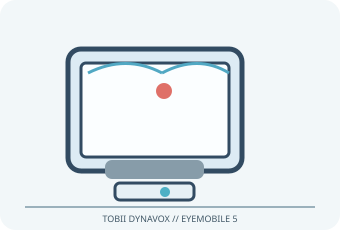

[ ADAPTIVE AND SWITCH-ACCESS CONTROLS // IDENTIFIED COMPONENT ]
Tobii Dynavox EyeMobile 5
Portable eye-gaze computer access solution combining a PCEye 5 tracker and device-specific mounting for a supported Windows tablet.

MODEL IDENTIFICATION: EyeMobile 5 mounted Windows access solution (kit/revision varies). Confirm the exact label, regional suffix, revision, receiver/accessories, software and bundle before service or compatibility claims.
Model specifications
| Catalog subcategory | Adaptive and switch-access controls |
|---|---|
| Exact device / model / SKU | EyeMobile 5 mounted Windows access solution (kit/revision varies) |
| Device and control operation | Infrared eye tracker sends gaze/pointer data through USB to the supported Windows tablet and Tobii Dynavox access software; selection uses dwell, gaze-click or compatible external switch options according to installed software. |
| Host interface | Infrared eye tracker sends gaze/pointer data through USB to the supported Windows tablet and Tobii Dynavox access software. |
| Switch/control inputs | Infrared eye tracker sends gaze/pointer data through USB to the supported Windows tablet and Tobii Dynavox access software; selection uses dwell, gaze-click or compatible external switch options according to installed software. |
| Mounting and adjustability | EyeMobile 5 bracket secures the tracker and supported Surface Pro tablet as a portable assembly. Tablet/tracker alignment, stand angle and seating position must follow the model-specific manual; host/tablet bundle can vary. |
| OS / host compatibility | Designed for supported Microsoft Surface Pro/Windows configurations, not a generic eye-tracker for arbitrary tablets. Use the current EyeMobile 5 compatibility list and software requirements; Windows version, tablet generation, USB ports and included tracker revision matter. |
| Accessibility considerations | Hands-free eye-gaze access can support communication and computer interaction; calibrate for the user, lighting, glasses and seating, and configure dwell/selection to avoid unwanted clicks. |
Accessibility and safety notes
Hands-free eye-gaze access can support communication and computer interaction; calibrate for the user, lighting, glasses and seating, and configure dwell/selection to avoid unwanted clicks.
Fit the tablet bracket securely and stabilize the stand; assembly is heavier than a tracker alone. Avoid blocked ventilation, cable strain and unsupported tablet substitutions. Eye-gaze is not a substitute for emergency signaling.
Document observed condition separately from manufacturer specifications. Test activation and host response in a controlled, non-safety-critical setup; record accessories, host OS, driver/app and firmware versions.
Manufacturer and support sources
- Tobii Dynavox EyeMobile product supportManufacturer/support reference for model identification and setup. Confirm applicable region, hardware revision and bundle.
- Tobii Dynavox software, manuals and compatibility downloadsManufacturer/support reference for model identification and setup. Confirm applicable region, hardware revision and bundle.
Support pages and compatibility lists can change. Retain the manual revision used for a physical-device assessment.